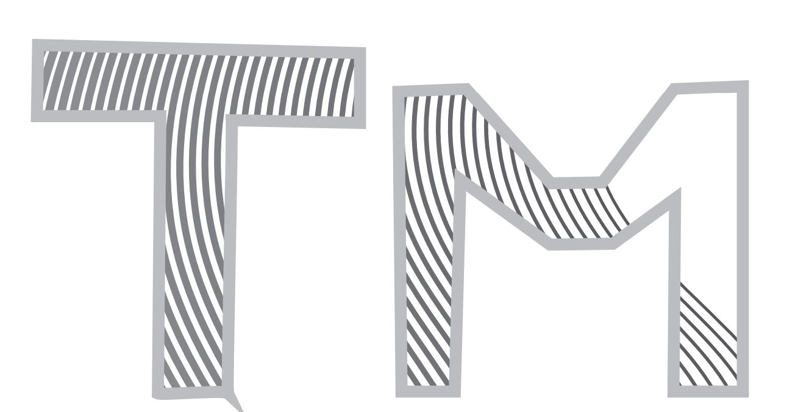
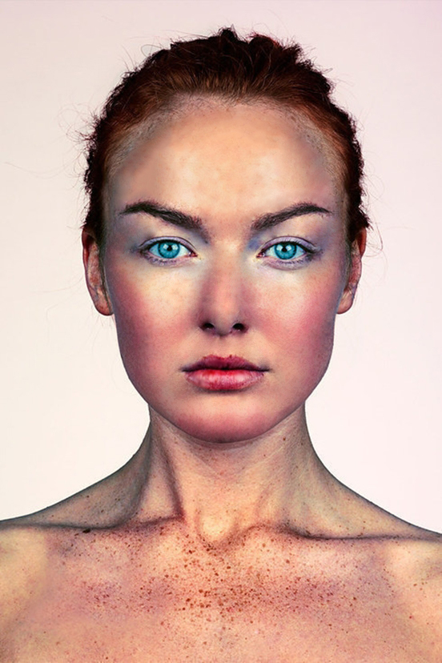
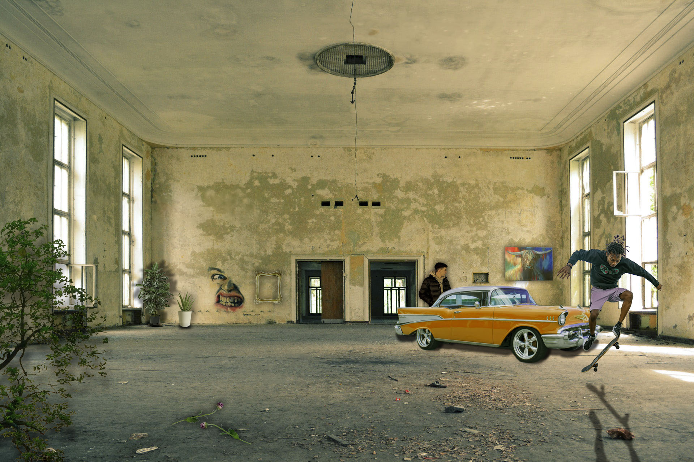

Vježba 1 - Font
Prvu vježbu sam radio u programu Font Forge, gdje je zadatak bio
kreirati vlastiti font,
odnosno ilustrirati slova i znakove.
Vježba 2 - Crtanje Beizerove krivulje
Drugu vježbu sam radio u programu Adobe Ilustrator,
gdje je zadatak bio
nacrtati Beizerovu krivulju u koordinatnom sustavu.

Vježba 3 - Crtanje oblika u Adobe Ilustratoru
Treću vježbu sam radio u programu Adobe Ilustrator, gdje je zadatak bio
crtanje oblika prema
predlošku, dupliciranje, rotiranje, pozicioniranje elemenata.

Vježba 4 - Izrada složenih objekata u Adobe Ilustratoru
Četvrtu vježbu sam radio u programu Adobe Ilustrator, gdje je zadatak bio
kreirati zadani složeni objekt, isto kao i jedan složeni objekt po vlastitom izboru.
Projektni zadatak 1 - Vektorska grafika
Prvi projektni zadatak sam radio u programu Adobe Ilustrator,
gdje je zadatak bio kreirati
kompoziciju prethodno naučenih tehnika
sa zadanim brojem objekata i funkcija
koje treba napraviti. Ja sam
napravio temu flore i faune morskog svijeta.
Vježba 5 - Retuširanje
Petu vježbu sam radio u programu Adobe Photoshop, gdje je zadatak bio
napraviti retuširanje, odnosno maknuti nepravilnosti i greške sa zadanih slika.

Vježba 6 - Koloriranje
Šestu vježbu sam radio u programu Adobe Photoshop, gdje je zadatak bio
kolorizirati sliku, odnosno iz crno bijele slike naposlijetku dobiti sliku u boji.
Vježba 7 - Fotomontaža
Sedmu vježbu sam radio u programu Adobe Photoshop, gdje je zadatak bio
napraviti realističnu fotomontažu, odnosno izrezati objekte iz više slika,
te ih ukomponirati u jednu smislenu cjelinu.

Projektni zadatak 2 - Fotomontaža
Drugi projektni zadatak sam radio u programu Adobe Photoshop,
gdje je zadatak
bio kreirati kompoziciju prethodno naučenih tehnika
sa zadanim brojem objekata i funkcija
koje treba napraviti. Prvo je
trebalo ispraviti greške i nepravilnosti na pozadinskoj slici,
a onda izrezati
elemente dodati ih na pozadinsku sliku, promijeniti im veličinu, kolorizirati ih,
te naposljetku dobiti iz svega jednu smislenu cjelinu.

Vježba 8 - Obrada videa (Kinemagraf)
Osmu vježbu sam radio u programima Adobe Premiere Pro i Adobe Photoshop,
gdje je zadatak bio
napraviti kinemagraf odnosno spoj pokretne i statične slike.

Vježba 9 - Obrada videa i zvuka
Devetu vježbu sam radio u programu Adobe Premiere Pro, gdje je zadatak bio
odrezati i spojiti nekoliko videa, dodati im efekte, prijelaze, tekst i zvuk.
Vježba 10 - HTML/CSS
Desetu vježbu sam radio u programu Visual Studio Code, gdje je zadatak bio
napraviti dvije vlastite web stranice sa zadanim elementima koje iste moraju sadržavati.
Klikni na sliku za prikaz cijele stranice
Projektni zadatak 3 - Web + Video
Treći projektni zadatak sam radio u programu Visual Studio Code, gdje je zadatak bio
napraviti četiri međusobno povezane vlastite web stranice sa zadanim elementima koje iste moraju sadržavati.
Klikni na sliku za prikaz cijele stranice